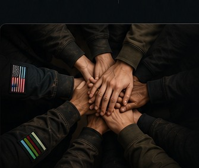

Community Events
Find and join events that bring our community together.
Explore Events →

Find your next adventure through member-organized Community Connections activities.
Checking the live Community Connections schedule.
Community Connections brings Veterans, First Responders, Front-Line Workers, and their families together through member-organized activities, shared interests, and time spent with people who understand.
From outdoor adventures and family activities to breakfasts, game nights, and simple opportunities to gather, every connection matters.
Find and join events that bring our community together.
Explore Events →Meet others who understand and support your journey.
Connect Today →From outdoor adventures to casual meetups and more. There is something for everyone.
See What's Next →A community that stands together, heals together, and grows together.
Learn More →Community Connections keeps the process simple from the first click through event day.
See upcoming dates, locations, costs, capacity, and the details you need before registering.
Reserve your spot, include family members, complete required acknowledgements, or join a waitlist.
Receive event updates and reminders, then spend time with people who understand and support the journey.
Community Connections exists to help people step out of isolation, build meaningful relationships, and keep showing up for one another.
Shared activities create natural opportunities to meet, laugh, and reconnect.
People find others who understand the experiences they carry every day.
Spouses, partners, and children are included in building stronger support networks.
One invitation, one conversation, and one connection can change the direction of a life.
Community Connections is built around real people, real experiences, and the simple truth that nobody should have to face life alone.
“I finally found people who understood without needing a long explanation.”
“The activity got me out of the house. The people are what made me come back.”
“It gave our family a place to connect with others who actually get it.”

Together we can break the isolation, support one another, and build a stronger, healthier community.
YOU ARE NOT ALONE.Community Connections is designed to be welcoming and simple. These answers cover the most common questions before someone registers.
Contact SupportCommunity Connections activities are intended for Veterans, First Responders, Front-Line Workers, and their families. Individual event listings may include additional eligibility, age, or safety requirements.
No. Community Connections activities are member-organized and are not official IWP events. They are not facilitated, monitored, or organized by IWP staff.
If a waitlist is available, the registration page will offer the option to join it. Organizers may promote participants when spots become available.
Each paid adventure lists the accepted payment methods and deadline. A reservation may remain pending until the organizer confirms payment.
Many activities welcome spouses, partners, and children. Check the individual adventure listing for family participation, age, and supervision details.
Organizers may send confirmation messages, reminders, schedule changes, and other important event information to the email address used during registration.
Invisible Wounds Project connects Veterans, First Responders, Front-Line Workers, and families with support, resources, and community.
Emergency: Call 911. The IWP help line is not a 24-hour emergency or crisis line.